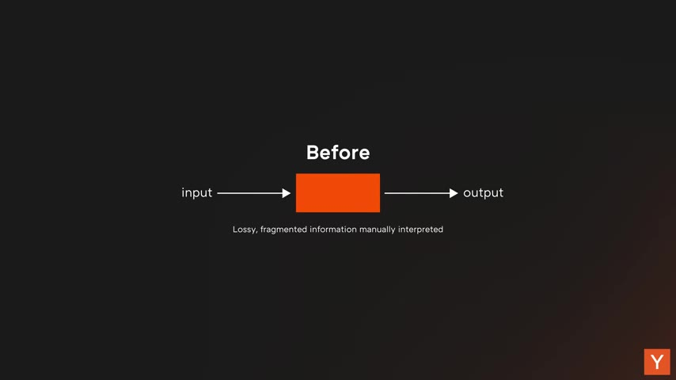
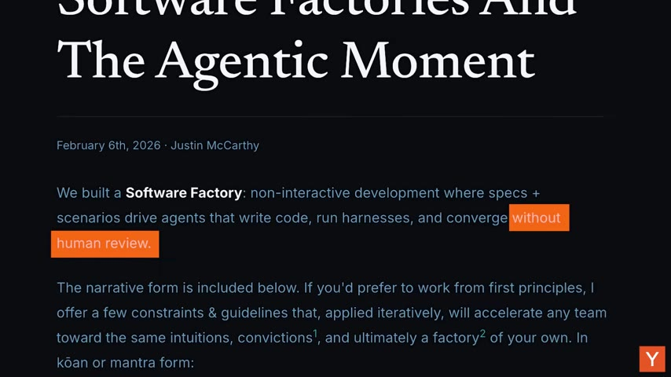

Most AI talk is about productivity — making engineers faster, bolting copilots onto existing workflows. A YC partner argues that misses the real shift: AI isn't a tool your company uses, it's the operating system your company runs on. The whole org should be a closed loop that learns, and that changes what roles even exist.
Watch on YouTubeMost people talk about AI as a productivity boost — make engineers faster, add copilots, ship more features. That framing misses the actual shift: it's not productivity, it's new capabilities. The right person with AI tools can now build features that used to require an entire team, or were simply impossible. So the mental model has to change.
AI should not be a tool your company just uses. It should be the operating system your company runs on.— Diana, YC
Every workflow, decision, and process should flow through an intelligent layer that's constantly learning and improving.
Borrowing from control systems: an open loop makes a decision, executes, and doesn't systematically measure the outcome or adjust — it's inherently lossy, and it's how companies used to run. A closed loop continuously monitors its output and adjusts to hit the goal. With self-improving agents, your company should run as a closed loop.

To build those loops, the whole organization has to be legible to AI — every important action should produce an artifact the central intelligence can learn from.
The concrete example is engineering: give an agent access to your Linear tickets, Slack eng channels, customer feedback (Pylon, GitHub), plans in Notion, sales calls, and standups, and it can analyze what actually shipped last sprint and how well it met real customer needs — then propose more accurate plans. Lossy eng-manager status roll-ups go away.
The highest-velocity companies are adopting AI software factories — the next evolution of test-driven development. Humans write a spec and the tests that define success; agents generate the implementation and iterate until the tests pass. The human defines what to build and judges the output; the code is the agent's job.

This is how you get the 1000x engineer Steve Yegge described — surround a single engineer with a system of agents. The era of the 1,000- or even 10,000-x engineer is here.
If the company is queryable, artifact-rich, and legible to AI, the classic management hierarchy stops making sense. You used to need middle managers and coordinators to route information up and down. Now the intelligence layer does that — so you should have almost no human middleware.
Following Jack Dorsey's framing, every company will have three employee types — and everyone, not just engineers, builds.
directly makes and runs things — eng, ops, support, sales. Everyone shows up to meetings with working prototypes, not pitch decks.
owns strategy and customer outcomes. Not a classic manager — one person, one outcome, no hiding.
still builds, coaches, and leads by example. If you're the founder this is you, at the forefront — don't delegate your AI strategy to someone else.
With this structure, companies get outsized results from much smaller teams. The critical shift is maximizing token usage, not headcount — the best companies will be "token maxing." One person with AI tools equals what used to take a large eng team, which means dramatically leaner eng, design, HR, and admin.
You should be willing to run an uncomfortably high API bill, because it's replacing what would have taken a far more expensive and inflated headcount.— Diana, YC
But you can't outsource your conviction — develop it yourself by sitting with coding agents until they break your priors. Early-stage founders have the edge here: no legacy systems, no entrenched org charts. Incumbents have to unwind years of standard operating procedures (some spin up internal skunkworks — Mutiny is cited as an example), while startups can design workflows around AI from day one and run orders of magnitude faster.